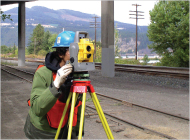

Whether you are planning a large transportation project, public works project, or private development, Bluedot Group will efficiently determine project specific requirements resulting in solutions to benefit you and your project.
Providing a full range of survey services to architectural and engineering firms, public works departments, and land developers, Bluedot Group has completed complex transportation projects such as PDX Airport Runway and Taxiway Improvements and ODOT Interstate Highway Surveys; public works projects such as the Stafford Basin Multi-use trail; and private developments such as Touchstone Townhomes condominium in Tigard.
This work expertise, combined with our experience on corporate design teams, provides you with a company that understands the importance of creating meaningful, accurate scopes and schedules.
Quality survey products require quality fieldwork. Our skilled staff have years of field and office experience using the latest instruments and technologies, such as Trimble Robotic Total Station instruments and GPS receivers.
With experience in both AutoCAD and Microstation software environments, Bluedot Group excels in providing our clients with products in their specified format.